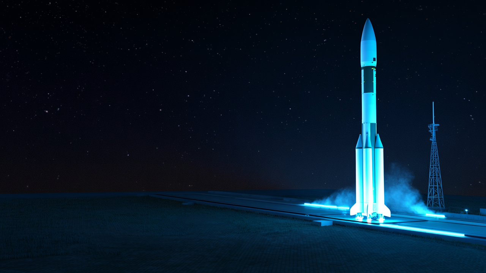
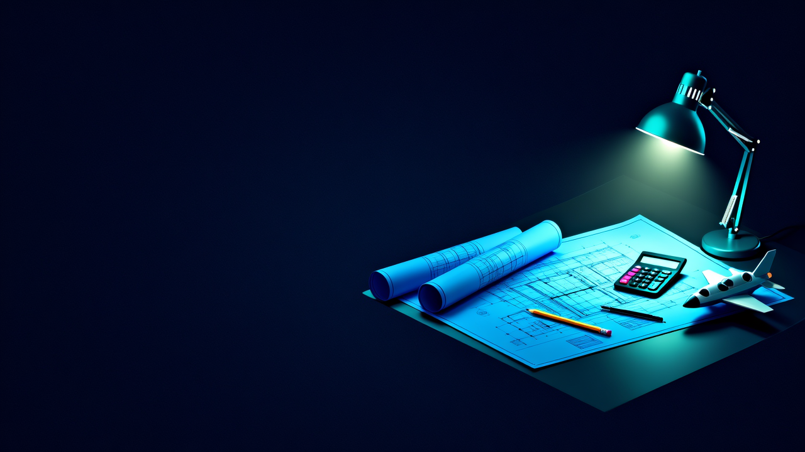
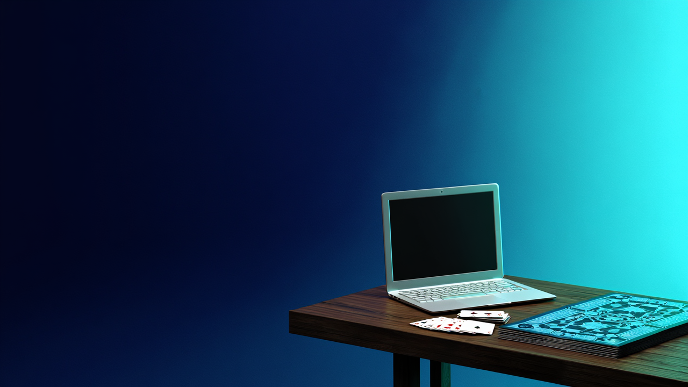
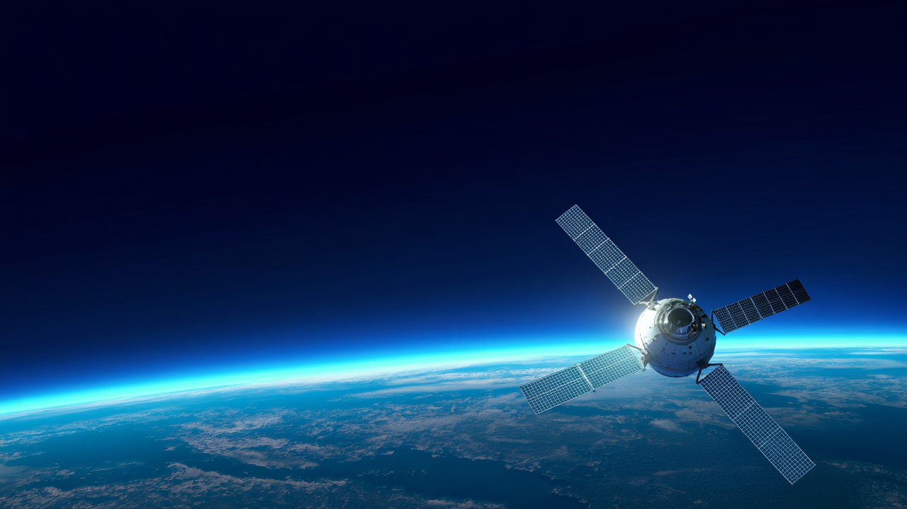
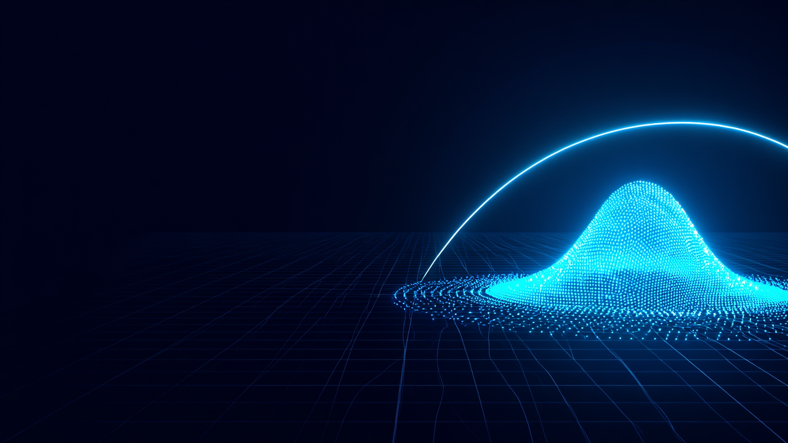

Draft deck. Print → Save as PDF, layout landscape, margins none, background graphics on:
one 16:9 slide per page (7 pages). On screen it is a plain scroll; the backgrounds are AI-generated
(prompts.json, node tools/gen-slides.mjs) and every slide carries the SI mark.

You get an objective, a budget and fifteen steps. The launcher, the spacecraft, the instruments and the flight operations are yours — and so is every consequence.
Project Bobr · digital edition in the browser + printable tabletop edition · one rulebook, one engine


app/): four roles with separate signatures, SVG build graphs, consultant, chatcalc/index.html): mission → trajectory → build → checks → P_success, science, Δratingcalc/campaign.html): 15 steps, flights, MCC channels, R&D/CML, school, tests, contractsserver/ + app/lobby.html): up to four players, live updates, archive, leaderboardprint/)data/cards.js — no second rulebooktools/session.mjs)One engine — data/engine.js — is the single source of truth
for every screen and for the balance report.

Everything runs from file://. The network team room starts with
node server/index.mjs — Node 24, no dependencies, no keys.

| Metric | Target | Actual |
|---|---|---|
| Average rating | > 40 | 81.4 |
| Failure share | 15–35% | 32.6% |
| Launcher / attitude-control duplication | < 40% | 30.1% / 30.1% |
| Average P_success | 0.68–0.72 | 0.687 |
| Missions skipped / per game | < 10% / ≥ 9.5 | 0.5% / 10.0 |
150 games × 10 missions from node tools/check.mjs 150.
The six reference builds of §12 land exactly on 0.681 / 0.763 / 0.504 / 0.770 / 0.843 / 0.449,
so a rule change cannot hide behind a lucky average.